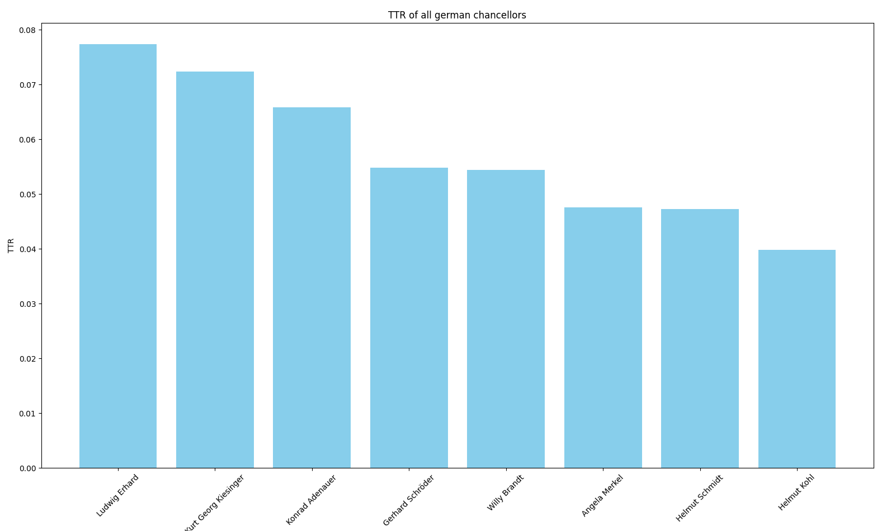

Tutorials
All example scripts presented on this page can be found in the repository in the examples directory.
Setup, Retrieval, Serialization
import germaparlpy.utilities as utilities
from germaparlpy.corpus import *
logging.basicConfig(level=logging.INFO, format="%(asctime)s - %(name)s - %(levelname)s - %(message)s")
if __name__ == "__main__":
# clone the germaparl corpus from github. We specify the parent directory as target since we are one level lower.
utilities.clone_corpus(directory="..")
# we deserialize the XML corpus and specify the legislative periods as intervals. The interval range(16,20) in python
# comprises 16, 17, 18 and 19 because intervals in python are right-open. Integer representing singular legislative
# terms are also a valid argument.
corpus = Corpus.deserialize_from_xml(range(16,20), path="../GermaParlTEI")
# Retrieval of all speeches from members affiliated with the party SPD:
partition_spd = corpus.get_speeches_from_party(party="SPD")
# All speeches are enclosed within a sp element that is annotated with metadata in element attributes. Print all
# attributes to determine, what to search for.
# Output: ['who_original', 'party', 'parliamentary_group', 'who', 'name', 'position', 'role']
unique_element_attributes = utilities.extract_element_attributes(corpus, tag="sp")
print(unique_element_attributes)
# After retrieving the attribute names, we can search the corpus for unique values for a certain attribute. Let's
# assume that you want to have a list of all annotated roles in the parliament.
# Output: ['mp', 'presidency', 'parliamentary_commissioner', 'misc', 'government']
unique_role_values = utilities.extract_attribute_values(corpus, tag="sp", attribute="role")
print(unique_role_values)
# Let's retrieve all speeches from all members of the cabinet in the corpus.
partition_chancellor = corpus.get_speeches_from_role(role="goverment")
# Retrieval methods can be chained. Let's assume that you want to retrieve all speeches from members of the CDU, which
# are regular members of the parliament that contain the term "Wirtschaft" at least once. You can use the following
# method chain for this:
partition = (corpus.get_speeches_from_party(party="CDU")
.get_speeches_from_role(role="mp")
.get_speeches_from_keyword(keyword="Wirtschaft"))
# You can get the actual content from the markup as a list of strings for further processing with toolkit methods:
all_paragraphs = utilities.get_paragraphs_from_corpus(partition)
all_interjections = utilities.get_interjections_from_corpus(partition)
# You can use the built-in methods len() and bool() on corpus or partition objects.
# Output: Our partition comprises 908 documents and 119462 paragraphs.
print(f"Our partition comprises {len(partition)} documents and {len(all_paragraphs)} paragraphs.")
# Partitions objects can be serialized as XML for human inspection, and Corpus and Partition instances can be
# serialized in JSON for intermediate storage.
partition.serialize_corpus_as_xml(path="../derived_corpus")
# JSON serialization of a corpus object
corpus.serialize(path="backup.json")
# Deserialize a corpus:
new_corpus = Corpus.deserialize_from_json(path="backup.json")
TTR Calculation
import matplotlib.pyplot as plt
import germaparlpy.utilities as utilities
from germaparlpy.corpus import *
logging.basicConfig(level=logging.INFO, format="%(asctime)s - %(name)s - %(levelname)s - %(message)s")
if __name__ == "__main__":
# Clone the GermaParl corpus from GitHub. We specify the parent directory as the target since we are one level below.
utilities.clone_corpus(directory="..")
# We deserialize the XML corpus without specifying a legislative period. The default value is range(1, 20), which
# includes the entire corpus.
corpus = Corpus.deserialize_from_xml(path="../GermaParlTEI")
# Let's assume we want to calculate the type-token ratio of all German chancellors. The type-token ratio is a
# simple statistical coefficient that quantifies the complexity of vocabulary.
# We implement the TTR calculation as a function.
def calculate_ttr(text: list[str]) -> float:
text = [speech.split(" ") for speech in text] # tokenize speeches
text = [token for speech in text for token in speech if token.isalnum()] # remove non-alphanumeric tokens from the speeches
return len(set(text)) / len(text) # return ttr
# We define all chancellors
chancellor_list = [
"Konrad Adenauer",
"Ludwig Erhard",
"Kurt Georg Kiesinger",
"Willy Brandt",
"Helmut Schmidt",
"Helmut Kohl",
"Gerhard Schröder",
"Angela Merkel"
]
# We calculate the TTR for all chancellors and collect the results in a dictionary.
chancellor_ttr = {}
for chancellor in chancellor_list:
chancellor_parition = corpus.get_speeches_from_politician(person=chancellor)
chancellor_speeches = utilities.get_paragraphs_from_corpus(chancellor_parition)
chancellor_ttr[chancellor] = calculate_ttr(chancellor_speeches)
# Output:
# {'Konrad Adenauer': 0.06581790181141273, 'Ludwig Erhard': 0.07735575796964228,
# 'Kurt Georg Kiesinger': 0.07238602465784993, 'Willy Brandt': 0.05436169529177415,
# 'Helmut Schmidt': 0.04721755524197501, 'Gerhard Schröder': 0.0548574862993217,
# 'Angela Merkel': 0.04755084983588955}
print(chancellor_ttr)
# sort and visualize results
sorted_data = dict(sorted(chancellor_ttr.items(), key=lambda item: item[1], reverse=True))
plt.figure(figsize=(10, 6))
plt.bar(sorted_data.keys(), sorted_data.values(), color='skyblue')
plt.xlabel('Chancellor')
plt.ylabel('TTR')
plt.title('TTR of all german chancellors')
plt.xticks(rotation=45)
plt.show()
Sentiment Analysis of selected speeches
import germaparlpy.utilities as utilities
from germaparlpy.corpus import *
from germansentiment import SentimentModel
logging.basicConfig(level=logging.INFO, format="%(asctime)s - %(name)s - %(levelname)s - %(message)s")
if __name__ == "__main__":
# We deserialize the corpus and specify the 19. legislative term.
corpus = Corpus.deserialize_from_xml(lp=19, path="../GermaParlTEI")
# We load a BERT Model trained fpr german sentiment classification "german-sentiment-bert" by guhr et al. (2020)
sentiment_model = SentimentModel()
# We retrieve all speeches from the party CDU that contain the keyword "Asyl" or the keywords "Migration"
corpus_cdu = corpus.get_speeches_from_party("CDU").get_speeches_from_word_list(["Asyl", "Migration"])
# We retrieve all speeches from the party AfD that contain the keyword "Asyl" or the keywords "Migration"
corpus_afd = corpus.get_speeches_from_party("AfD").get_speeches_from_word_list(["Asyl", "Migration"])
# We extract the text from the markup for further processing
corpus_cdu_paragraphs = utilities.get_paragraphs_from_corpus(corpus_cdu)
corpus_afd_paragraphs = utilities.get_paragraphs_from_corpus(corpus_afd)
# Output:
# The corpus partition containing the speeches of the cdu comprises 7560 paragraphs.
# The corpus partition containing the speeches of the cdu comprises 8218 paragraphs.
print(f"The corpus partition containing the speeches of the cdu comprises {len(corpus_cdu_paragraphs)} paragraphs.")
print(f"The corpus partition containing the speeches of the cdu comprises {len(corpus_afd_paragraphs)} paragraphs.")
# we implement the polarity calculation as function since the library returns a string and we have to break our
# data sets into chunks to cause no exceptions.
def calculate_polarity(p: list[str]) -> float:
model = SentimentModel()
chunk_size = 100
chunks = [p[i:i + chunk_size] for i in range(0, len(p), chunk_size)]
total_polarity = 0
for chunk in chunks:
chunk_result = model.predict_sentiment(chunk)
for s in chunk_result:
if s == 'neutral':
continue
elif s == 'negative':
total_polarity -= 1
else:
total_polarity += 1
return total_polarity / len(p)
# We calculate the polarity for both data sets.
corpus_cdu_polarity = calculate_polarity(corpus_cdu_paragraphs)
corpus_afd_polarity = calculate_polarity(corpus_afd_paragraphs)
# Output:
# The mean polarity of speeches in the 19. legislative period of the german parliament from the party CDU
# containing the word 'asyl' or 'migration' is -0.022389875882209784.
# The mean polarity of speeches in the 19. legislative period of the german parliament from the party AFD
# containing the word 'asyl' or 'migration' is -0.11084656084656085.
print("The mean polarity of speeches in the 19. legislative period of the german parliament from the party CDU "
f"containing the word 'asyl' or 'migration' is {corpus_cdu_polarity}.")
print("The mean polarity of speeches in the 19. legislative period of the german parliament from the party AFD "
f"containing the word 'asyl' or 'migration' is {corpus_afd_polarity}.")